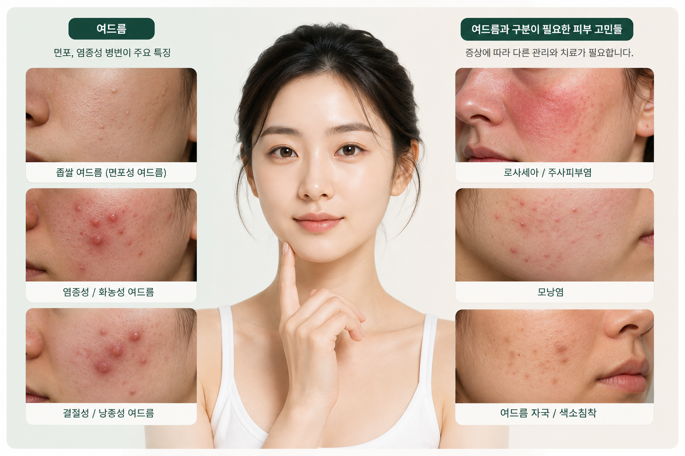
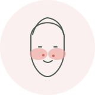
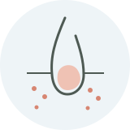
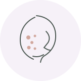
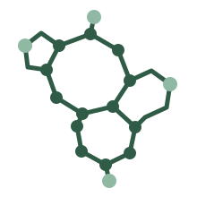
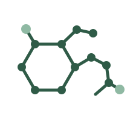
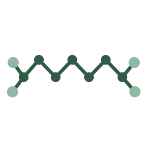
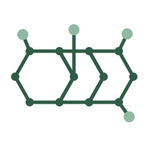
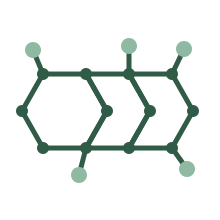
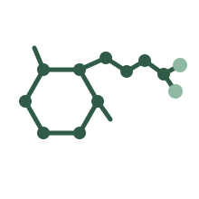

질환 안내여드름인지, 로사세아인지, 모낭염인지 먼저 구분해보세요.
증상 구분 가이드 →Skin condition & medicine guide
내 피부 고민에 맞는 원인을 알아보고
관련 피부 치료 성분 정보를 확인하세요.
여드름처럼 보여도 주사피부염·로사세아·모낭염과 구분이 필요할 수 있습니다. 증상 특징을 먼저 비교하고, 관련 피부 치료 성분 정보를 확인해보세요.
약물 안내성분마다 적용 범위와 주의사항이 다릅니다.
성분별 정보 보기 →
내 증상은 어디에 가까울까요?
각 페이지에서 특징, 구분 포인트, 관련 페이지을 자세히 확인할 수 있습니다.
ACNE GUIDE
여드름
주사피부염 ·
여드름 자국 ·
여드름
종류별 차이점
좁쌀·염증성·화농성·결절성 여드름을 한 페이지에서 비교합니다.
아래와 같은 경험이 있나요?
비교하기 →
ROSACEA
- 블랙헤드·화이트헤드 같은 면포
- 피지가 많은 부위의 구진·농포
- 좁쌀부터 염증성 병변까지 혼재
주사피부염 ·
로사세아

안면홍조와 구진·농포가 반복되는 경우 확인할 구분 포인트를 정리합니다.
아래와 같은 경험이 있나요?
자세히 보기 →
FOLLICULITIS
- 중앙 얼굴의 반복적인 홍조·화끈거림
- 구진·농포가 있지만 면포는 두드러지지 않음
- 열·자극 등 특정 상황에서 악화
모낭염

여드름과 혼동하기 쉬운 모낭염의 특징과 원인별 차이를 정리합니다.
아래와 같은 경험이 있나요?
자세히 보기 →
AFTER ACNE
- 모낭을 중심으로 비슷한 크기의 병변
- 가려움·압통이 동반될 수 있음
- 원인에 따라 치료 접근이 달라짐
여드름 자국 ·
색소침착

활성 여드름이 가라앉은 뒤 남는 붉은 자국과 갈색 색소침착을 구분합니다.
아래와 같은 경험이 있나요?
자세히 보기 →
- 여드름이 가라앉은 자리에 붉거나 갈색의 흔적이 남음
- 피부가 평평하며 새로운 구진·농포 없이 색 변화가 중심
- 붉은 자국과 갈색 색소침착은 발생 원인과 관리 접근이 다름
증상별 상세 안내
각 페이지에서 특징, 구분 포인트, 관련 페이지을 자세히 확인할 수 있습니다.
REAL REVIEW
성분 체험 후기
제품 선택과 이용 과정에서 남긴 실제 후기 중 일부를 정리했습니다. 개인의 사용 경험은 효과를 보장하지 않으며, 증상과 치료 반응은 사람마다 다를 수 있습니다.
수란트라크림 비교 · 피부 고민 후기
가격이 부담스러웠는데 덕분에 해결했어요
수란트라크림은 15g 1개에 5~6만원 수준이라 너무 부담됐었는데, 이버비 크림은 30g 1개에 1만원으로 저렴하게 잘 구매했어요. 구매 후 3개 째 사용중인데 오히려 수란트라 크림보다 효과도 더 좋은 것 같아요. 현재는 꾸준히 사용하면서 피부 변화를 지켜보고 있습니다.
이버멕틴 크림 · 구성 후기
구성과 가격을 비교하고 구매했어요
기존에 사용하던 제품 가격이 부담돼 대안을 찾다가 알게 됐습니다. 구성과 가격을 비교해 주문했고, 받아본 뒤에는 패키지와 제품 상태를 확인했습니다. 여러 개를 한 번에 구매할 수 있다는 점도 만족스러웠습니다.
아큐파인 · 이소트레티노인
여러 판매처를 비교한 뒤 처음 주문했어요
여드름 관리 제품을 찾으면서 여러 사이트의 가격과 후기를 비교했습니다. 실제 이용자 후기와 배송 경험을 확인한 뒤 처음 주문했고, 배송은 약 2주 정도 걸렸습니다. 사용 전에는 성분과 주의사항을 다시 확인했습니다.
아다팔렌 겔 · 제품 후기
성분을 확인하고 아다팔렌 제품을 선택했어요
레티노이드 계열 제품을 알아보다가 아다팔렌 성분을 확인했습니다. 제품 정보와 가격을 비교한 뒤 주문했고, 배송은 약 3주 정도 걸렸습니다. 포장 상태가 깔끔해서 재구매 의사 있습니다.
후기는 참고 정보로 확인해주세요.
후기는 개인의 구매·사용 경험을 바탕으로 하며 의학적 효과나 치료 결과를 보장하지 않습니다. 약물 사용 전에는 성분별 적응증과 주의사항을 확인하세요.
INGREDIENTS
피부 치료에 사용되는 주요 성분
여드름, 주사피부염·로사세아 등 피부 고민에 사용되는 주요 성분의 특징과 대표 제품을 확인해보세요.

▯ 바르는 약
이버멕틴
Ivermectin로사세아의 염증성 병변 치료에 사용되는 국소 성분
대표 제품이브리아크림 · 이버비크림
자세히 보기 →

▯ 바르는 약레티노이드
아다팔렌
Adapalene면포성 여드름 치료에 사용되는 국소 레티노이드 성분
대표 제품아다페린 겔
자세히 보기 →

▯ 바르는 약항염 · 항균
아젤라익산
Azelaic Acid여드름·로사세아 등에 사용되는 국소 성분
대표 제품에자닉 겔 · 아누아 아젤라익산 세럼
자세히 보기 →

◉ 먹는 약항생제
미노사이클린
Minocycline염증성 여드름 등에 사용되는 경구 테트라사이클린계 항생제
대표 제품미노즈
자세히 보기 →

◉ 먹는 약항생제
독시사이클린
Doxycycline염증성 여드름·일부 로사세아 등에 사용되는 경구 항생제
대표 제품누독시
자세히 보기 →

◉ 먹는 약레티노이드
이소트레티노인
Isotretinoin중증 여드름 치료에서 고려되는 경구 레티노이드 성분
대표 제품아큐파인
자세히 보기 →
안전한 사용을 위해
모든 성분은 적응증·사용법·부작용이 다를 수 있으므로, 개인 상태에 맞는 사용 여부는 의료전문가와 상담해 확인하세요.
* 분자 이미지는 성분을 직관적으로 구분하기 위한 플랫 인포그래픽이며, 실제 원자 배치·입체구조를 정밀 재현한 분석용 구조식은 아닙니다.
How to use this guide
제품명보다 먼저,
성분과 질환을 확인하세요.
같은 계열의 제품이라도 함량, 제형, 허가사항, 사용 대상과 주의사항이 다를 수 있습니다.
1. 질환 확인비슷해 보이는 증상을 구분합니다.
2. 성분 확인일반적으로 사용되는 성분과 작용 방식을 확인합니다.
3. 주의사항 확인중요한 금기와 주의사항을 확인합니다.
관련 제품이 궁금하신가요?
제품 정보와 문의는 별도 사이트에서 확인할 수 있습니다.